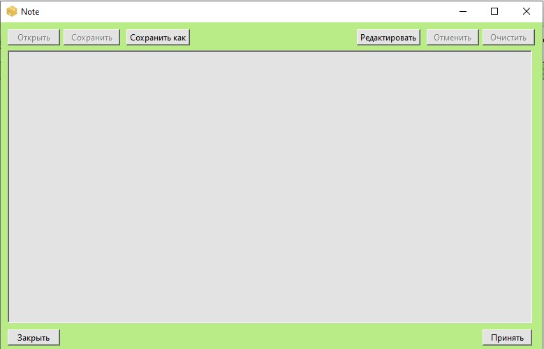

[Редактировать] - Нажмите для разблокировки изменения текста заметки
[Отменить] - Нажмите для возвращения текста заметки до редактирования
[Очистить] - Нажмите для полного удаления текста заметки
[Открыть] - Нажмите для ввода текста из файла в заметку
[Сохранить] - Нажмите для сохранения текста заметки в выбранный файл
[Сохранить как] - Нажмите для сохранения текста заметки в новый файл